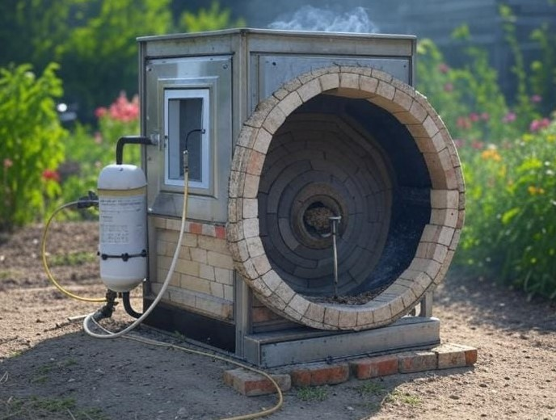

Revolutionizing Waste Management for a Healthier Planet.
Current waste disposal methods release harmful toxins and contribute to environmental pollution, leading to diseases like cancer.
The Eco Hybrid Scrubber efficiently captures and neutralizes harmful emissions, transforming polluted air into clean air for a healthier environment.
Founder and visionary leader driving Darubini’s mission to improve air quality.
Ensuring operational efficiency and delivering innovative solutions in waste management.
Managing client relations and overseeing the installation and maintenance of our scrubbers.
Initial cost: Ksh 850,000 | Annual Maintenance: Ksh 200,000
Projected Annual Profit: Ksh 2.5 Million | Break-even: 15 months
Global adoption is expected as air quality regulations tighten. Our R&D efforts aim to increase pollutant scrubbing efficiency by 30% by 2030.
Our technology improves urban air quality and reduces health risks, contributing to a healthier environment for all.